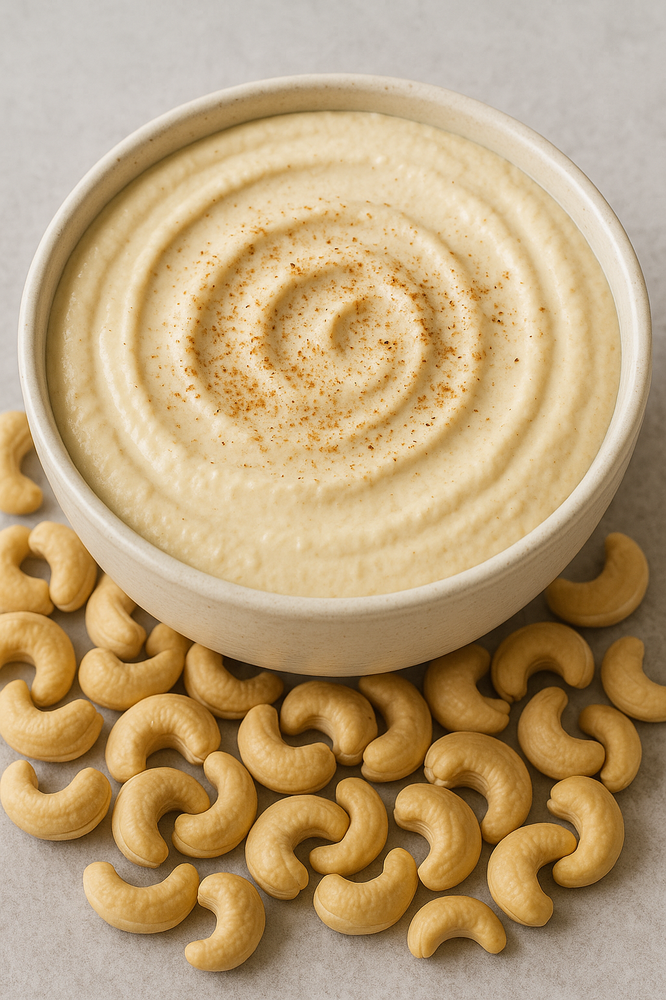

Cashew Cheese Dip

Vegan cashew-based queso with a cheesy, tangy kick.
Yield: ~1½ cups (about 8 servings) |
Prep Time: 10 minutes (+ soaking) |
Cook Time: 0 minutes
Cashew Cheese Dip Ingredients
- 1 cup raw cashews, soaked 4–8 hours and drained
- ¼ cup nutritional yeast
- 2–3 tablespoons mild hot sauce, to taste
- ½ teaspoon garlic powder
- ½ teaspoon onion powder
- ½–1 teaspoon salt, to taste
- ½–1 cup water, divided
- Optional spices: pinch cumin, chili powder, smoked paprika, or cayenne
Directions
- Soak raw cashews in water for 4–8 hours, then drain and rinse.
- Add cashews, nutritional yeast, hot sauce, garlic powder, onion powder, salt, and ½ cup water to a blender or food processor.
- Blend until completely smooth, adding more water as needed to reach a pourable queso-like consistency.
- Taste and adjust with more salt, hot sauce, or spices.
- Serve warm or at room temperature with chips or veggies.